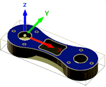

<div id="wcs_orientation_flipY"><p>Y 軸方向を 180 度反転します。</p>
<table class="tipTable" cellspacing="10">
<tr>
<td><center></center></td>
<td><center></center></td>
</tr><tr>
<td><center><p><b>Y 軸方向</b></p></center></td>
<td><center><p><b>Y 軸を 180 度反転</b></p></center></td>
</tr></table>
</div>